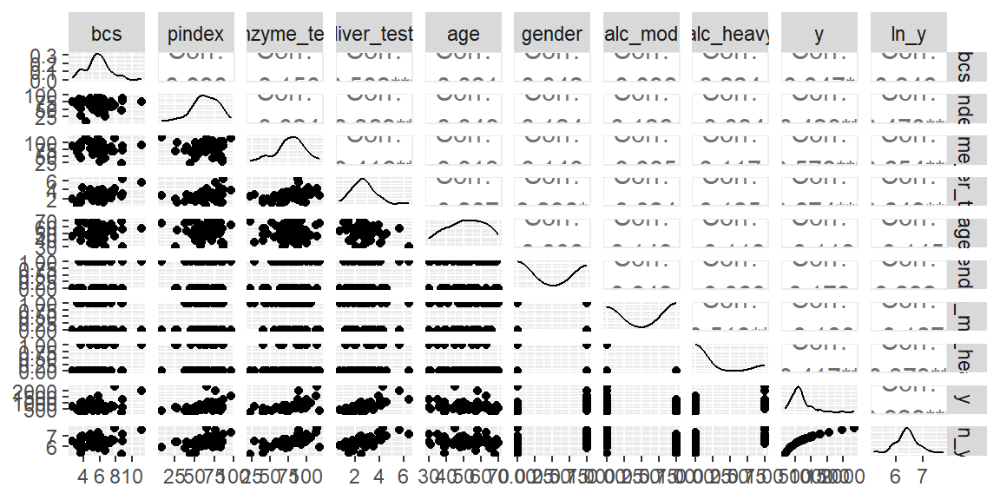
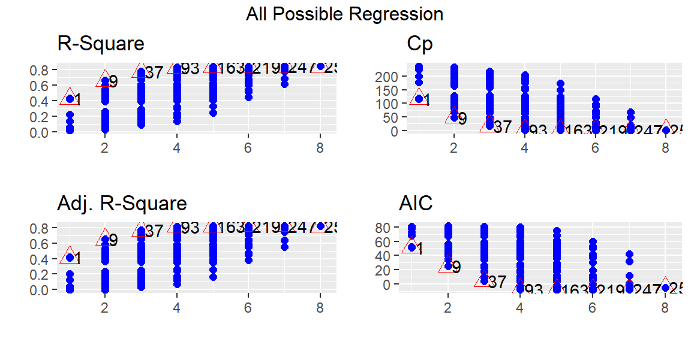
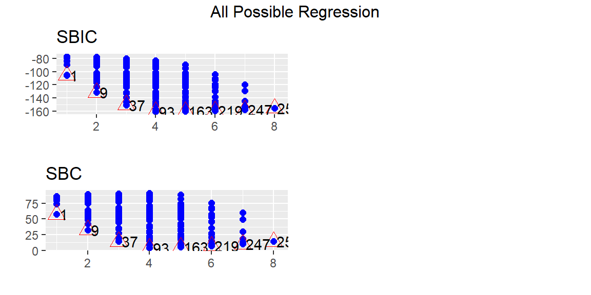
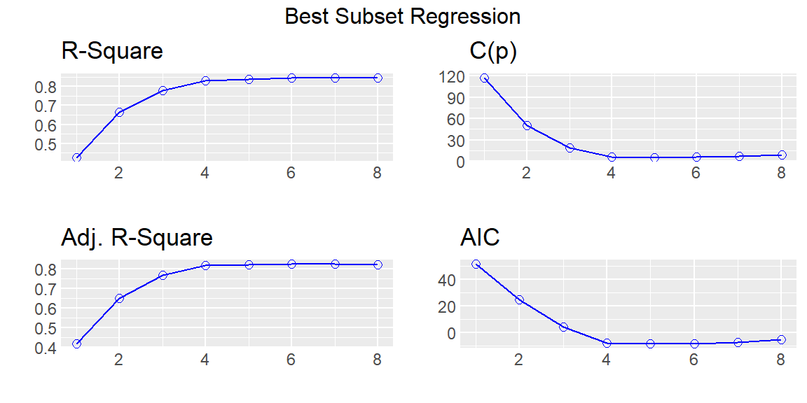
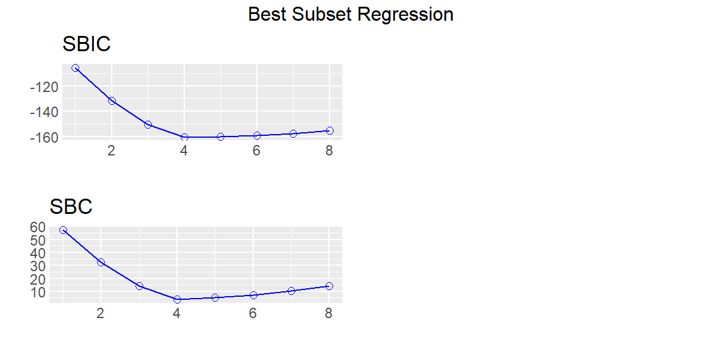

18 Stepwise and Best Subsets Regression
“Statistics cannot be any smarter than the people who use them. And in some cases, they can make smart people do dumb things.” - Charles Wheelan
In the last chapter we compared models with criteria such as adjusted \(R^2\), AIC, BIC, and PRESS. This chapter covers procedures that use those criteria to search through the candidate models and find a few good subsets of predictors. There are two kinds of search: best subsets regression, which looks at every subset (or the best one of each size), and stepwise regression, which adds and removes predictors one at a time.
NoteBest subsets vs. stepwise search
Best subsets regression and stepwise regression are both search procedures, but they search in different ways.
| Procedure | Search strategy | Typical output | Main caution |
|---|---|---|---|
| Best subsets | Fits all possible subsets, or the best subset for each model size. | Several good candidate models. | Can take a long time to compute when there are many predictors. |
| Stepwise | Adds and/or removes predictors one at a time. | One selected model. | Can miss a better model because it follows a single path through the possible models. |
Both are tools for building a model. Neither replaces diagnostics, validation, or knowledge of the subject.
18.1 Best Subsets Procedure
As noted in the last chapter, the number of possible models, \[ 2^{p-1} \] grows quickly with the number of predictors.
Fitting every one of them can be a lot of work. When \(p\) is small and the sample size is not too large, though, we can fit all the possible models and pick out a few that are close on some criterion for a closer look.
Example 18.1
ExampleSurgical Unit data and best subsets regression
The surgical unit data is in the olsrr library, which also has functions for subsets regression. The tidymodels library has no functions for subsets regression, so we use olsrr here.
The data come from Kutner1 and describe the survival of patients who had a liver operation. The response is the number of days the patient survived after the operation; we will model the natural log of the survival time. The predictor variables are:
-
bcs: blood clotting score -
pindex: prognostic index -
enzyme_test: enzyme function test score -
liver_test: liver function test score -
age: age, in years -
gender: indicator variable for gender (0=male, 1=female) -
alc_mod: indicator variable for history of alcohol use (1=Moderate, 0=otherwise) -
alc_heavy: indicator variable for history of alcohol use (1=Heavy, 0=otherwise)
The scatterplot matrix shows no obvious nonlinear relationships.
First, we fit all \(2^8=256\) models with the ols_step_all_possible() function.
fit <- lm(
ln_y ~ bcs + pindex + enzyme_test + liver_test +
age + gender + alc_mod + alc_heavy,
data = dat
)
fits <- ols_step_all_possible(fit)
plot(fits)

These plots point to a few models worth a closer look. Suppose we want model 93, which looks like the best model with four predictors on every criterion. We can pull it out of the results with the following code.
mindex n predictors rsquare adjr predrsq
1 93 4 bcs pindex enzyme_test alc_heavy 0.8299187 0.8160345 0.7862922
cp aic sbc
1 5.733992 -8.130569 3.803335To see only the best subset of predictors for each value of \(p\), use the ols_step_best_subset function. ols_step_all_possible returns every possible model; ols_step_best_subset returns the criteria for just the best combination of predictors at each size.
subset <- ols_step_best_subset(fit)
subset$metrics |>
select(mindex, n, predictors, rsquare, adjr, predrsq, cp, aic, sbc) mindex n predictors
1 1 1 enzyme_test
2 2 2 pindex enzyme_test
3 3 3 pindex enzyme_test alc_heavy
4 4 4 bcs pindex enzyme_test alc_heavy
5 5 5 bcs pindex enzyme_test gender alc_heavy
6 6 6 bcs pindex enzyme_test age gender alc_heavy
7 7 7 bcs pindex enzyme_test age gender alc_mod alc_heavy
8 8 8 bcs pindex enzyme_test liver_test age gender alc_mod alc_heavy
rsquare adjr predrsq cp aic sbc
1 0.4272545 0.4162401 0.3495510 117.478274 51.434340 57.401292
2 0.6631757 0.6499669 0.6043705 50.491827 24.766816 32.722752
3 0.7780487 0.7647316 0.7291402 18.901451 4.243223 14.188143
4 0.8299187 0.8160345 0.7862922 5.733992 -8.130569 3.803335
5 0.8374622 0.8205312 0.7827597 5.528174 -8.580332 5.342556
6 0.8434664 0.8234834 0.7836037 5.772458 -8.612898 7.298974
7 0.8460095 0.8225761 0.7806940 7.028837 -7.497389 10.403468
8 0.8461081 0.8187495 0.7711225 9.000000 -5.531982 14.357859plot(subset)

Fitting all possible models does not take long for this dataset. Other datasets have many more possible predictors and more observations, and ols_step_all_possible would take too long. In that case we can use one of the automatic search methods described later in this chapter.
18.1.1 Choosing a Subset of Models
Best subsets regression gives a small number of subsets that are “good” by some criterion. You may want to use more than one criterion when judging the possible subsets of predictors.
Once you have a few “good” subsets to study closely, you still have to choose the final model. That choice should take into account outliers, checks of the model assumptions, and what you know about the subject, and it should be confirmed with model validation.
TipAfter subset selection, slow down
The output of a subset-selection procedure should narrow down the candidate models. It should not make the final decision for you.
Before choosing a final model, ask:
- Are the selected predictors meaningful for the research question?
- Do several models perform about equally well?
- Are any selected predictors difficult, expensive, or unreliable to measure?
- Do the residual diagnostics look acceptable?
- Does the model still perform well on validation data or under cross-validation?
The selection procedure starts the discussion of the final model. It does not end it.
18.2 Stepwise Regression Procedures
Sometimes the pool of potential predictor variables has 30 to 40 variables or more, and a “best” subsets algorithm takes too much computer time to be feasible. An automatic search procedure that builds the “best” subset of \(X\) variables sequentially can help in that case.
The forward stepwise regression procedure is probably the most widely used of these automatic search methods. It was developed to save computation compared with fitting all possible regressions. The method builds a sequence of regression models, adding or deleting one \(X\) variable at each step.
The rule for adding or deleting an \(X\) variable can be stated in terms of the reduction in the error sum of squares, the \(t^*\) statistic, the \(F^*\) statistic, AIC, or BIC; these versions are equivalent.
18.2.1 Forward Stepwise Regression
Here is the forward stepwise regression algorithm in terms of AIC.
-
The routine first fits a simple linear regression model for each of the \(P - 1\) potential \(X\) variables and computes the AIC of each one.
The \(X\) variable with the smallest AIC is the candidate for the first addition.
-
Suppose \(x_7\) enters at step 1. The routine now fits every regression model with two \(X\) variables in which \(x_7\) is one of the pair, and computes the AIC of each.
The added variable whose model has the smallest AIC is the candidate for the second addition.
If that AIC is smaller than the AIC of the model from the previous step (here, the model with only \(x_7\)), the variable is added to the model with \(x_7\). Otherwise, the search stops.
-
Suppose \(x_3\) is added at the second step. The routine now checks whether any of the \(X\) variables already in the model should be dropped.
At this point the only other \(X\) variable in the model is \(x_7\). At later steps there would be several variables in the model besides the one just added.
The routine looks at the reduced models formed by removing each variable already in the model. If removing a variable gives a lower AIC than the current model, the variable whose removal gives the smallest AIC is dropped. Otherwise, the variables stay in the model.
-
Suppose \(x_7\) stays, so both \(x_3\) and \(x_7\) are in the model.
The routine now finds the next candidate for addition, then checks whether any variables already in the model should be dropped, and so on. The search stops when no \(X\) variable can be added or deleted.
So in stepwise regression, a predictor that entered at an earlier step can be dropped later if it no longer helps once other variables have been added.
18.2.2 Other Stepwise Procedures
Other stepwise procedures can also be used to find a “best” subset of predictor variables. We describe two of them.
Forward Selection
The forward selection search procedure is a simpler version of forward stepwise regression. It leaves out the check of whether a variable already in the model should be dropped.
Backward Elimination
The backward elimination search procedure works in the opposite direction from forward selection.
It starts with the model containing all potential \(X\) variables and looks at the reduced models formed by deleting one predictor at a time. If any reduced model has a lower AIC than the current model, the variable whose deletion gives the smallest AIC is dropped.
The model with the remaining \(P - 2\) \(X\) variables is then fit, and the next candidate for dropping is found. This continues until no more \(X\) variables can be dropped.
A stepwise version of this procedure lets variables that were dropped earlier be added back later. It is called backward stepwise regression.
NoteComparing automatic search procedures
| Procedure | Starting model | Can add variables? | Can remove variables? |
|---|---|---|---|
| Forward selection | Intercept-only model | Yes | No |
| Forward stepwise | Intercept-only model | Yes | Yes |
| Backward elimination | Full model | No | Yes |
| Backward stepwise | Full model | Yes | Yes |
The procedures may agree, but they do not have to. The order in which variables enter or leave the model can change the final result.
Example 18.2
ExampleStepwise procedures for the Surgical Unit data
We return to Example 18.1 and use automatic stepwise procedures to search for a model.
First, forward stepwise regression:
forward_step <- ols_step_both_aic(fit, details = FALSE)
forward_step$metrics step variable method r2 adj_r2 aic sbc sbic
1 1 enzyme_test addition 0.4272545 0.4162401 51.434340 57.401292 -105.4395
2 2 pindex addition 0.6631757 0.6499669 24.766816 32.722752 -131.5971
3 3 alc_heavy addition 0.7780487 0.7647316 4.243223 14.188143 -150.4023
4 4 bcs addition 0.8299187 0.8160345 -8.130569 3.803335 -160.5329
5 5 gender addition 0.8374622 0.8205312 -8.580332 5.342556 -160.2288
6 6 age addition 0.8434664 0.8234834 -8.612898 7.298974 -159.4064Next, forward selection:
forward_sel <- ols_step_forward_aic(fit, details = FALSE)
forward_sel$metrics step variable r2 adj_r2 aic sbc sbic
1 1 enzyme_test 0.4272545 0.4162401 51.434340 57.401292 -105.4395
2 2 pindex 0.6631757 0.6499669 24.766816 32.722752 -131.5971
3 3 alc_heavy 0.7780487 0.7647316 4.243223 14.188143 -150.4023
4 4 bcs 0.8299187 0.8160345 -8.130569 3.803335 -160.5329
5 5 gender 0.8374622 0.8205312 -8.580332 5.342556 -160.2288
6 6 age 0.8434664 0.8234834 -8.612898 7.298974 -159.4064Forward selection ends with the same model as forward stepwise.
Now backward elimination:
backward_elim <- ols_step_backward_aic(fit, details = FALSE)
backward_elim$metrics step variable r2 adj_r2 aic sbc sbic
1 1 liver_test 0.8460095 0.8225761 -7.497389 10.403468 -158.0206
2 2 alc_mod 0.8434664 0.8234834 -8.612898 7.298974 -159.8175For this dataset, all three procedures pick the same final set of predictors.
formula_text <- function(model) {
paste(deparse(formula(model)), collapse = " ")
}
final_model_summary <- tibble(
procedure = c(
"Forward stepwise",
"Forward selection",
"Backward elimination"
),
final_model = c(
formula_text(forward_step$model),
formula_text(forward_sel$model),
formula_text(backward_elim$model)
),
AIC = c(
AIC(forward_step$model),
AIC(forward_sel$model),
AIC(backward_elim$model)
),
BIC = c(
BIC(forward_step$model),
BIC(forward_sel$model),
BIC(backward_elim$model)
)
)
final_model_summary |>
print(width = Inf)# A tibble: 3 × 4
procedure
<chr>
1 Forward stepwise
2 Forward selection
3 Backward elimination
final_model AIC BIC
<chr> <dbl> <dbl>
1 ln_y ~ enzyme_test + pindex + alc_heavy + bcs + gender + age -8.61 7.30
2 ln_y ~ enzyme_test + pindex + alc_heavy + bcs + gender + age -8.61 7.30
3 ln_y ~ bcs + pindex + enzyme_test + age + gender + alc_heavy -8.61 7.30The agreement is reassuring, but it will not always happen. Different stepwise procedures can select different final models, especially when the predictors are correlated or when several models have similar criteria values.
olsrr does not have a function for backward stepwise regression.
18.3 Limitations of Stepwise Methods
Stepwise procedures end by naming a single regression model as “best.” The “best” subsets algorithm, by contrast, can identify several regression models as “good” for final consideration. Naming a single model as “best” is a major weakness of the stepwise procedures, for three reasons:
- Each of the stepwise search procedures can sometimes pick a suboptimal regression model as “best.”
- Reporting a single regression model can hide the fact that several other models are also “good.”
- Whether a regression model is “good” can only be settled by examining it with a variety of diagnostics.
WarningStepwise methods can be unstable
Stepwise methods make a sequence of local decisions. A variable that looks useful early in the search may become less useful after another variable enters, and in some procedures a variable that was skipped early is never considered again.
Small changes to the data can sometimes lead to a different selected model. For this reason stepwise procedures are best used to explore. They do not prove that one model is the best.
ExampleWhen stepwise and best subsets disagree
This small simulated example shows how a sequential search can miss a model that looks better when all subsets are considered. The predictors x1 and x2 are strongly related to each other. Each one is weak by itself, but together they explain a good share of the variation in the response.
library(broom)
set.seed(3)
n <- 60
stepwise_demo <- tibble(
x1 = rnorm(n),
x3 = rnorm(n),
x4 = rnorm(n)
) |>
mutate(
x2 = x1 + rnorm(n(), sd = 0.15),
y = x1 - x2 + rnorm(n(), sd = 0.25)
)
candidate_predictors <- c("x1", "x2", "x3", "x4")
make_formula <- function(vars) {
if (length(vars) == 0) {
y ~ 1
} else {
as.formula(paste("y ~", paste(vars, collapse = " + ")))
}
}
model_label <- function(vars) {
if (length(vars) == 0) {
"Intercept only"
} else {
paste(vars, collapse = " + ")
}
}
all_subsets <- map(
0:length(candidate_predictors),
\(k) {
if (k == 0) {
list(character(0))
} else {
combn(candidate_predictors, k, simplify = FALSE)
}
}
) |>
unlist(recursive = FALSE)
best_subset_demo <- tibble(predictors = all_subsets) |>
mutate(
model = map_chr(predictors, model_label),
fit = map(predictors, \(vars) lm(make_formula(vars), data = stepwise_demo)),
AIC = map_dbl(fit, AIC),
adj_r_squared = map_dbl(
fit,
\(fit_object) glance(fit_object)$adj.r.squared
)
) |>
select(model, AIC, adj_r_squared)
best_subset_demo |>
arrange(AIC) |>
slice_head(n = 6)# A tibble: 6 × 3
model AIC adj_r_squared
<chr> <dbl> <dbl>
1 x1 + x2 7.85 0.329
2 x1 + x2 + x4 9.40 0.322
3 x1 + x2 + x3 9.81 0.318
4 x1 + x2 + x3 + x4 11.3 0.311
5 Intercept only 29.9 0
6 x3 31.3 -0.00794The best subset by AIC uses both x1 and x2. Compare that with a forward stepwise search that starts from the intercept-only model.
null_model <- lm(y ~ 1, data = stepwise_demo)
full_model <- lm(y ~ x1 + x2 + x3 + x4, data = stepwise_demo)
stepwise_model <- step(
null_model,
scope = list(lower = null_model, upper = full_model),
direction = "both",
trace = 0
)
formula_label <- function(model) {
paste(deparse(formula(model)), collapse = " ")
}
tibble(
method = c("Best subsets by AIC", "Forward stepwise by AIC"),
selected_model = c(
best_subset_demo |>
arrange(AIC) |>
slice(1) |>
pull(model),
formula_label(stepwise_model)
),
AIC = c(
min(best_subset_demo$AIC),
AIC(stepwise_model)
)
) |>
print(width = Inf)# A tibble: 2 × 3
method selected_model AIC
<chr> <chr> <dbl>
1 Best subsets by AIC x1 + x2 7.85
2 Forward stepwise by AIC y ~ 1 29.9 Forward stepwise search gets stuck because neither x1 nor x2 looks helpful enough on its own. Best subsets regression still finds the pair, because it evaluates combinations of predictors directly.
18.3.1 Using an Automatic Search as a Starting Point
What can we do when the pool of potential \(X\) variables is very large and we have to use an automatic search procedure? Use the subset the procedure finds as a starting point for finding other “good” subsets. One way is to take the number of \(X\) variables in the model it picks as roughly the right subset size, and then run the “best” subsets procedure for subsets of that size and nearby sizes.
WarningPost-selection p-values can be too optimistic
After an automatic procedure chooses a model, it is tempting to read the p-values in the final model as if that model had been specified before anyone looked at the data. That is not what happened.
The same data were used twice:
- first to search through many possible models, and
- then to estimate coefficients and report p-values for the selected model.
The search favored variables that happened to look useful in this sample, so the usual p-values and confidence intervals from the final model can be too optimistic. They often understate the uncertainty that comes from the model-selection process.
The selected model can still be useful. Inference after selection just needs caution. When inference is the main goal, it is better to choose the important predictors in advance, validate the selected model on new data, or use methods designed for post-selection inference.
18.4 Recap
This chapter compared best subsets regression with stepwise regression procedures for choosing candidate sets of predictors.
| Idea | Meaning |
|---|---|
| Best subsets regression | A procedure that evaluates all possible subsets, or the best subset for each model size, using model-comparison criteria. |
| All possible models | With \(p-1\) possible predictors, there are \(2^{p-1}\) possible subset models. |
| Best subset for each size | The best model among all models with the same number of predictors. |
| Forward selection | Starts with the intercept-only model and adds predictors one at a time. Once a predictor enters, it is not removed. |
| Forward stepwise regression | Starts small and adds predictors, but also lets predictors already in the model be removed later. |
| Backward elimination | Starts with the full model and removes predictors one at a time. |
| Backward stepwise regression | Starts with the full model and lets predictors be removed or added back later. |
| Sequential search limitation | Stepwise methods can miss combinations of predictors that are weak one at a time but useful together. |
| Automatic search | A computational procedure for finding a candidate model; it does not prove that the selected model is best. |
| Post-selection inference | Inference after automatic model selection can be too optimistic because the same data were used to choose and to estimate the model. |
| Post-selection checking | After a subset is selected, the model still needs diagnostics, validation, and evaluation by someone who knows the subject. |
18.5 Check your understanding
NoteProblems
Why does the number of possible subset models grow quickly as the number of candidate predictors increases?
What is the main difference between best subsets regression and stepwise regression?
Why might best subsets regression be impractical with many candidate predictors?
How does forward selection differ from forward stepwise regression?
How does backward elimination differ from forward selection?
Why is it a weakness that stepwise procedures usually return a single selected model?
Why should a model selected by a stepwise procedure still be checked with residual diagnostics?
Why should subject-matter knowledge be used after a subset-selection procedure?
If forward selection, forward stepwise regression, and backward elimination choose the same model, does that prove the model is the true best model? Explain.
Why might correlated predictors make stepwise selection unstable?
How can a forward stepwise search miss a pair of predictors that is useful together?
Why can p-values from a final model selected by stepwise regression be too optimistic?
TipSolutions
Each predictor can be included or excluded. Adding one more candidate predictor doubles the number of possible models, so the number of models gets large very quickly.
Best subsets searches more broadly. Best subsets regression evaluates many or all of the possible combinations of predictors. Stepwise regression follows a single path, adding and/or removing one variable at a time.
The number of models can become enormous. With many predictors, fitting every possible model can take too much computing time and give too many candidate models to look at carefully.
Forward stepwise can remove variables later. Forward selection only adds predictors. Forward stepwise adds predictors but can also drop one that becomes less useful after other variables enter.
They start from opposite ends. Forward selection starts with the intercept-only model and adds predictors. Backward elimination starts with the full model and removes predictors.
It can hide other good models. Several models may perform about the same, but a stepwise procedure usually reports only one, which makes the selected model look more certain than it is.
Selection criteria do not check assumptions. A model can have a good AIC, BIC, or adjusted \(R^2\) and still have nonlinear residual patterns, nonconstant variance, outliers, or influential observations.
Some variables are more meaningful or easier to use than others. A selected predictor may be expensive to collect, hard to interpret, or less important in theory than a similar competing predictor.
No. Agreement among the procedures is reassuring, but it does not prove that the model is true or that it is the best for future data. Validation and diagnostics are still needed.
Correlated predictors can substitute for each other. If two predictors carry similar information, small changes in the data or in the order of entry can decide which one is selected.
It evaluates predictors one at a time. If neither predictor improves the criterion enough by itself, forward stepwise may stop before it ever reaches the two-predictor model. Best subsets can find the pair because it evaluates combinations of predictors directly.
The data were used for both selection and inference. The model was chosen because it looked good in this sample. Standard p-values treat the selected model as if it had been planned in advance, so they can understate the uncertainty and make the evidence look stronger than it is.
Kutner, M. H., Nachtsheim, C. J., Neter, J., & Li, W. (2004). Applied Linear Statistical Models. McGraw-Hill/Irwin series operations and decision sciences.↩︎